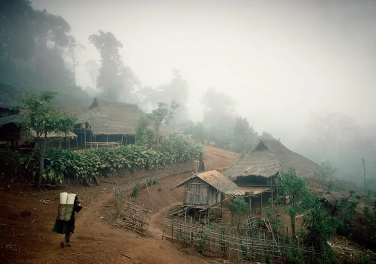
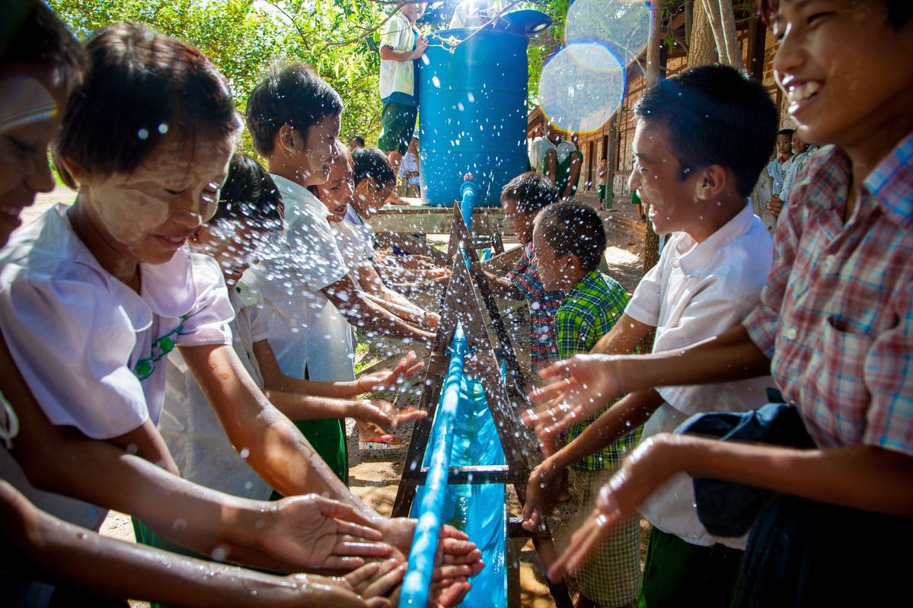

Win Lae May
Helps design the website and presentation, contributes to coding and supports research.
HYDRIX is an educational website created by three Year 9 students to explain drought and water shortages in Myanmar. Our project brings together environmental research, useful information and practical steps people can take to prepare before water supplies become limited.
DISCOVER OUR PROJECTHYDRIX explains drought, water shortages and how to prepare before water supplies become limited.
We focus on Myanmar’s Central Dry Zone, explain its water challenges and share practical conservation and preparedness advice for homes, schools and communities.

Our vision explains the change we hope to encourage. Our mission explains how HYDRIX supports it.

01 / VISIONWe hope communities across Myanmar become more aware of drought risks and protect their available water resources.
Better information can encourage responsible water use and early planning for periods of limited supply.
AWARENESS / CONSERVATION / PREPAREDNESSOur mission is to make drought education clear and accessible, with particular attention to Myanmar’s Central Dry Zone.
We combine research, water-saving guidance and interactive features to help visitors understand the issues and take practical action.
EXPLORE PREPAREDNESS 02 / MISSION
02 / MISSION
Meet the three Year 9 students behind HYDRIX and the roles they play in developing the website.
Helps design the website and presentation, contributes to coding and supports research.
Leads website coding and design while researching the information used in HYDRIX.

Focuses on research and gathering reliable information for the website and contributes to coding.